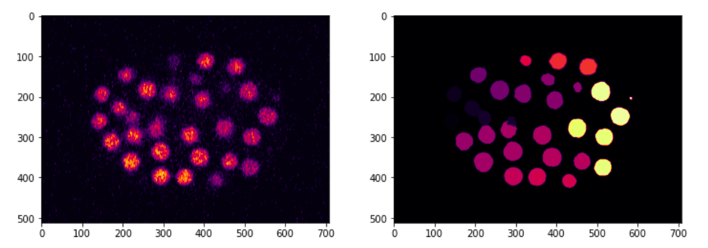
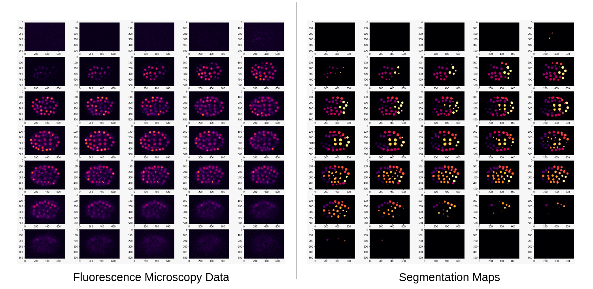

GSoC - Community Bonding
This blog post summary of what I've been doing this week and what I plan to do in the coming week.
Work Done This Week (May 17th to June 6th)
- Gave a presentation on the weekly DevoWorm meeting, discussed the goals and deadlines that need to be met in the coming months - link to the slides
- Read some articles/papers suggested by my mentor that deal with working with communities and collaboration, liked one in particular that talks about "bursty" communication and how it helps remote teams thrive - link
- Read publications that deal with extracting data from C. elegans embryogenesis data, tried to find possible applications that could be implemented. I've linked to some of the papers I came across below:
- The last paper in the list above links to the cell-tracking-challenge website, which contains download links to many datasets, among which I found a 3D+t fluorescence microscopy dataset of the developing C. elegans embryo with segmentation maps - link.
- I had zero experience with .tif files, had to figure out how to convert them to numpy arrays, then used matplotlib to plot them as images.

- The dataset is by no means ideal, it is scattered across multiple folders and contains many useless datapoints near the extreme ends of the dorsal-ventral axis.

- Links to the notebook :
Planned :
- Begin working on upgrading the DevoLearn cell membrane segmentation model.
- Explore and clean the cell-tracking-challenge dataset.
- Discuss in detail about how the cell-tracking-challenge dataset could be used to automate the process of 3D cell-segmentation.